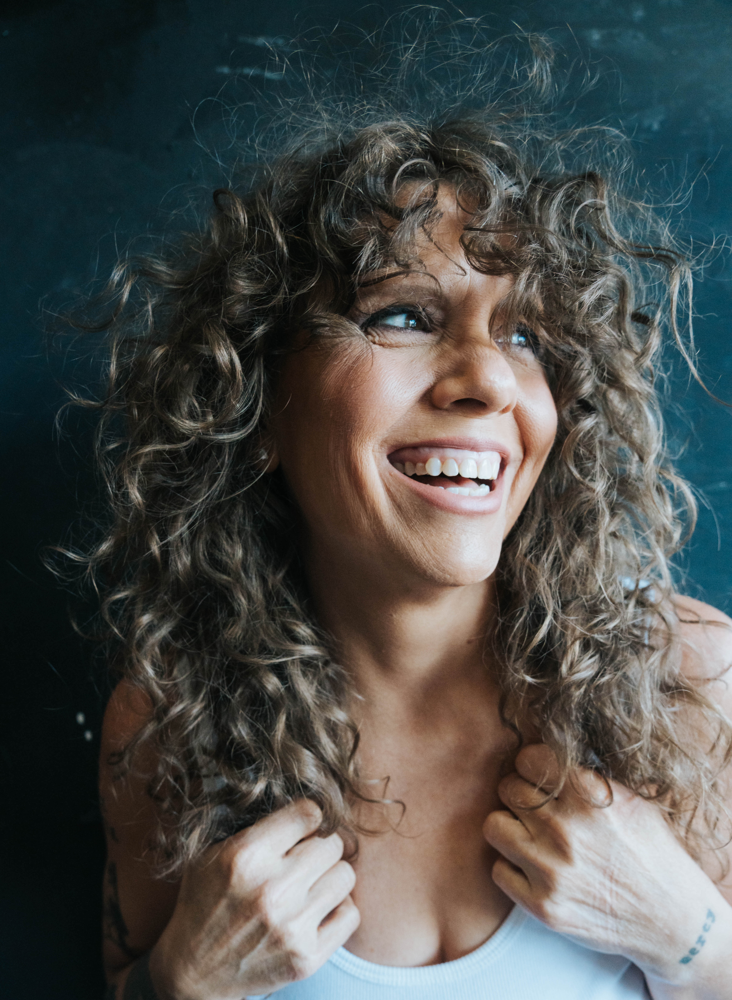

After a toxic mold exposure when Malia was 40, she suffered some health concerns. She had gone from extreme Whole30 Paleo to six years of being a vegan. Her weight fluctuated for years. After being diagnosed with Stage One colon cancer at the age of 48 and having emergency surgery she knew her life had become unmanageable and it was time to take back control. She tried everything she could think of on her own to no avail. Isolated and alone doomscrolling on Instagram Malia came across a woman who spoke about her own struggles and her story resonated deeply. Malia watched from the shadows as her new IG friend @Fiftyfitnessjourney spoke of the changes she made in the course of a year and the difference it made in her body. Little by little, story after story, reel by reel Malia came out of the shadows and into the light and decided to face her own reality. She was 233lbs and needed to make a change. For her family. For her health. For her future. She pulled out the work out gear and started taking walks. Denise got 10,000 steps a day, but Malia started with 3,000. Then it turned to 5,000. Before long Malia was waking up at 5:30 in the morning to get steps in and 8,000 was turning to 10,000. Every damn day. By this time, Malia wanted to make a change. She had joined Denise's Rebellion Body 12 Week Group Coaching Program for Mid-Life Women in August 2024. It included education for mindset shifting and weekly zoom calls and working with a trainer to set your macros and for periodic check ins. Progress Photos (IN A BIKINI!) and by this time Malia joined a local gym and was lifting weights four days a week. Things were shifting! Malia was learning what portions were. How much 128oz was. And what it felt like to FUEL your body. But most importantly she was doing all of this within a community of women who were in it together. Learning together. Growing together. Encouraging each other together. And showing up for themselves and one another, together. By December, when the 12 weeks were ending, Malia was down 30lbs. Over the next six months she would lose another 30lbs. She was STRONG. And she was smiling. Everyone noticed her. there was a difference. She was glowing. Radiating. Sure, she still had more fat to lose, more muscle to gain, more areas to heal. But she shifted. Out of the old and into a new way of being. It was no longer simply "needing" or "wanting" to change, now Malia knew that she MUST change. And that changed everything. She had left behind what was holding herself back all those years, what was no longer serving her. And now, she must never go back. She had awoken her Warrior Goddess. Her Divine Badass. Her Rebel Heart.